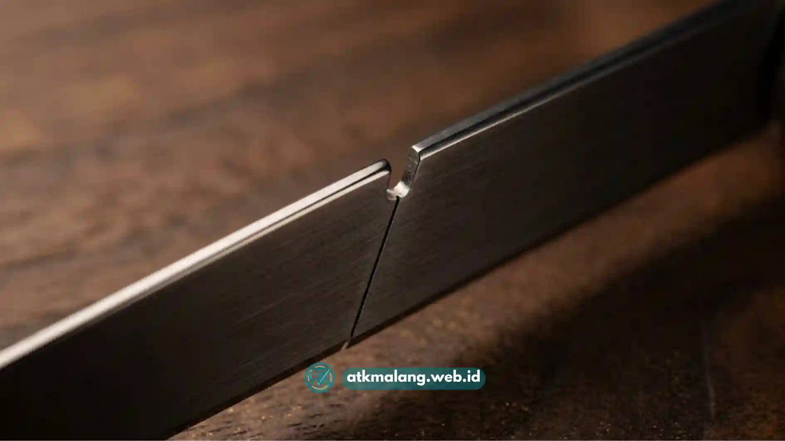

Pisau cutter kantor terbagi menjadi beberapa jenis berdasarkan ukuran mata pisau, mekanisme, dan fungsi, seperti cutter kecil, cutter besar, cutter otomatis, dan cutter segmented untuk kebutuhan memotong kertas hingga kardus.
- Cutter kecil cocok untuk memotong kertas dan dokumen tipis.
- Cutter besar lebih tepat untuk kardus, karton, dan bahan tebal.
- Cutter otomatis memiliki mekanisme retract otomatis demi keamanan.
- Cutter segmented memudahkan penggantian mata pisau yang tumpul.
- Pemilihan jenis cutter sebaiknya disesuaikan dengan frekuensi dan jenis pekerjaan.
Memilih pisau cutter yang tepat untuk kebutuhan kantor sering kali dianggap sepele, padahal jenis dan ukuran cutter yang salah dapat memperlambat pekerjaan bahkan meningkatkan risiko cedera ringan saat digunakan.
Artikel ini membahas secara menyeluruh berbagai jenis pisau cutter kantor, karakteristik masing-masing, serta cara memilih yang paling sesuai dengan kebutuhan harian di lingkungan kerja.
Daftar Isi
- Apa Saja Jenis Pisau Cutter Kantor yang Umum Dipakai?
- Apa Perbedaan Cutter Kecil dan Cutter Besar?
- Bagaimana Cara Kerja Cutter Otomatis?
- Apa Kelebihan dan Kekurangan Cutter Segmented?
- Faktor Apa Saja yang Perlu Dipertimbangkan Sebelum Membeli Cutter Kantor?
- Kesalahan Umum Saat Memilih atau Menggunakan Cutter Kantor
- Tips Merawat Cutter Kantor Agar Tetap Awet
Apa Saja Jenis Pisau Cutter Kantor yang Umum Dipakai?
Jenis pisau cutter kantor yang paling umum digunakan adalah cutter kecil (small cutter), cutter besar (heavy duty cutter), cutter otomatis (auto-retractable cutter), dan cutter segmented dengan mata pisau bersegmen yang bisa dipatahkan.
Setiap jenis memiliki karakteristik berbeda:
- Cutter kecil biasanya memiliki lebar mata pisau sekitar 9 mm dan ringan digenggam, sehingga nyaman untuk memotong kertas, amplop, atau label.
- Cutter besar memiliki lebar mata pisau sekitar 18 mm atau lebih, dengan gagang yang lebih kokoh sehingga mampu menembus bahan yang lebih tebal seperti kardus dan karton tebal.
- Cutter otomatis dilengkapi pegas yang membuat mata pisau otomatis masuk kembali ke dalam badan cutter begitu tekanan pada tombol dilepas, mengurangi risiko tergores saat cutter tidak digunakan.
- Cutter segmented memiliki mata pisau yang terdiri dari beberapa segmen kecil sehingga saat bagian ujung tumpul, pengguna cukup mematahkan satu segmen untuk mendapatkan ujung yang tajam kembali tanpa perlu mengganti seluruh mata pisau.
Apa Perbedaan Cutter Kecil dan Cutter Besar?
Perbedaan utama cutter kecil dan cutter besar terletak pada lebar mata pisau, kekuatan gagang, dan jenis bahan yang mampu dipotong secara efektif dan aman.
Cutter kecil lebih ringan, presisi, dan cocok untuk pekerjaan administratif seperti membuka amplop, memotong kertas, atau merapikan label.
Karena bilahnya lebih tipis, cutter kecil kurang ideal digunakan untuk bahan tebal karena berisiko membuat mata pisau cepat tumpul atau bahkan patah.
Cutter besar dirancang untuk pekerjaan yang lebih berat, seperti membuka kardus pengiriman barang, memotong lakban tebal, atau merapikan karton di gudang kecil kantor. Gagangnya umumnya lebih ergonomis dengan pegangan karet agar tidak licin saat digunakan dalam waktu lama.
Bagaimana Cara Kerja Cutter Otomatis?
Cutter otomatis bekerja dengan mekanisme pegas internal yang membuat mata pisau tertarik kembali ke dalam badan cutter secara otomatis saat tombol geser dilepaskan oleh pengguna.
Mekanisme ini dirancang khusus untuk meningkatkan aspek keamanan, terutama di lingkungan kerja dengan mobilitas tinggi seperti bagian pengemasan atau pengiriman barang.
Dengan mata pisau yang otomatis tersembunyi, risiko cutter tertinggal dalam kondisi terbuka di atas meja kerja dapat diminimalkan, sehingga cocok digunakan pada kantor yang memiliki standar keselamatan kerja lebih ketat.

Cutter segmented memudahkan mendapatkan ujung yang tajam dengan mematahkan segmen tumpul.Apa Kelebihan dan Kekurangan Cutter Segmented?
Kelebihan utama cutter segmented adalah kemudahan mendapatkan ujung mata pisau tajam kembali tanpa harus mengganti seluruh bilah, sementara kekurangannya adalah bagian segmen yang dipatahkan perlu dibuang dengan hati-hati.
Cutter jenis ini banyak digemari karena efisiensi biaya dalam jangka panjang. Satu batang mata pisau segmented bisa dipakai berkali-kali hingga seluruh segmennya habis, sebelum akhirnya diganti dengan isi cutter yang baru.
Namun, pengguna tetap perlu berhati-hati saat mematahkan segmen agar potongan kecil bekas mata pisau tidak melukai tangan atau tercecer sembarangan di area kerja.
Faktor Apa Saja yang Perlu Dipertimbangkan Sebelum Membeli Cutter Kantor?
Faktor utama yang perlu dipertimbangkan sebelum membeli cutter kantor adalah jenis bahan yang akan dipotong, frekuensi penggunaan, tingkat keamanan yang dibutuhkan, dan kenyamanan genggaman gagang cutter.
Beberapa pertimbangan praktis meliputi:
- Jenis pekerjaan harian, apakah lebih banyak memotong kertas tipis atau bahan tebal seperti karton.
- Frekuensi penggunaan, karena cutter yang dipakai intensif membutuhkan gagang yang lebih tahan lama dan nyaman digenggam.
- Kebutuhan keselamatan kerja, terutama bila cutter digunakan bersama oleh banyak staf.
- Ketersediaan isi ulang mata pisau di toko alat tulis terdekat agar cutter tetap dapat digunakan dalam jangka panjang.
Kesalahan Umum Saat Memilih atau Menggunakan Cutter Kantor
Kesalahan umum yang sering terjadi adalah menggunakan cutter kecil untuk memotong bahan tebal, jarang mengganti mata pisau yang sudah tumpul, dan tidak menyimpan cutter pada tempat yang aman setelah digunakan.
Penggunaan cutter kecil pada bahan yang terlalu tebal dapat membuat pengguna menekan pisau lebih keras dari seharusnya, sehingga meningkatkan risiko selip dan cedera.
Selain itu, mata pisau yang sudah tumpul justru lebih berbahaya dibandingkan mata pisau tajam, karena membutuhkan tekanan ekstra yang membuat kontrol gerakan menjadi kurang presisi.
Tips Merawat Cutter Kantor Agar Tetap Awet
Tips merawat cutter kantor meliputi mengganti mata pisau secara berkala, menyimpan cutter di tempat kering, dan selalu mengunci mata pisau setelah digunakan.
Perawatan sederhana ini dapat memperpanjang usia pakai cutter sekaligus menjaga keselamatan penggunanya. Menyimpan cutter dalam laci atau wadah khusus Alat Tulis Kantor juga membantu mencegah mata pisau tergores benda lain yang dapat mempercepat ketumpulan.
Memahami perbedaan jenis pisau cutter kantor membantu memilih alat yang paling sesuai dengan kebutuhan pekerjaan, baik untuk memotong kertas ringan maupun bahan tebal seperti karton.
Cutter kecil unggul untuk pekerjaan administratif, cutter besar lebih cocok untuk kebutuhan berat, cutter otomatis menawarkan keamanan tambahan, dan cutter segmented memberi efisiensi biaya jangka panjang.